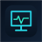

Nexus Remote
Browser Bridge
Проверяем bridge...
Подключите Nexus Remote PC
Поддерживаемые сайты
YouTube
YouTube Music
VK
Как это работает
- Запустите Nexus Remote PC.
- Откройте YouTube, YouTube Music или VK.
- Управляйте медиа с телефона через Nexus Remote.